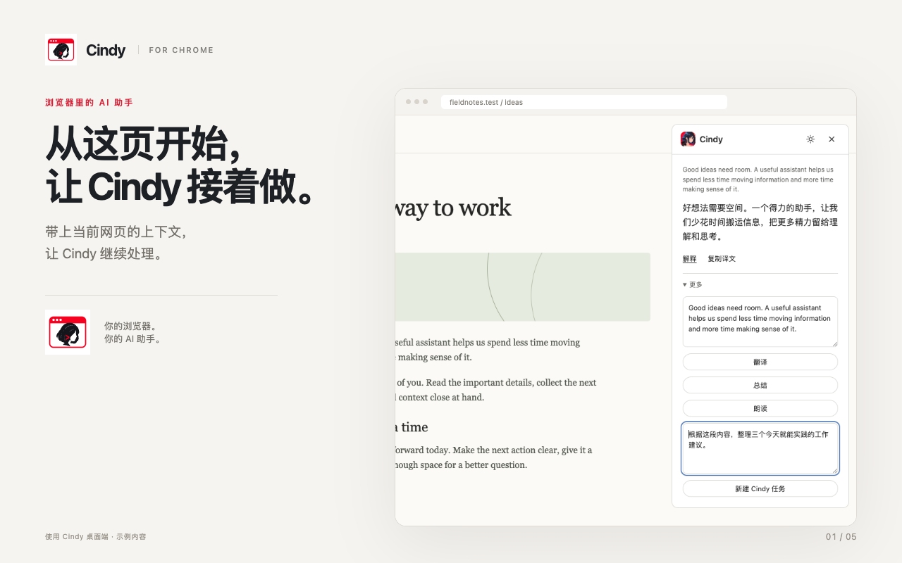
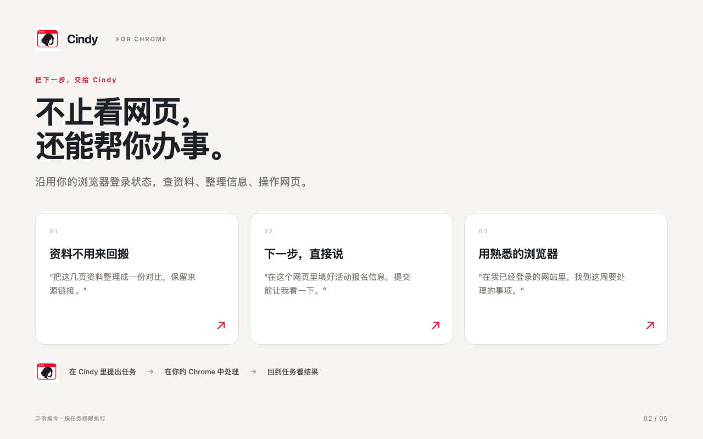
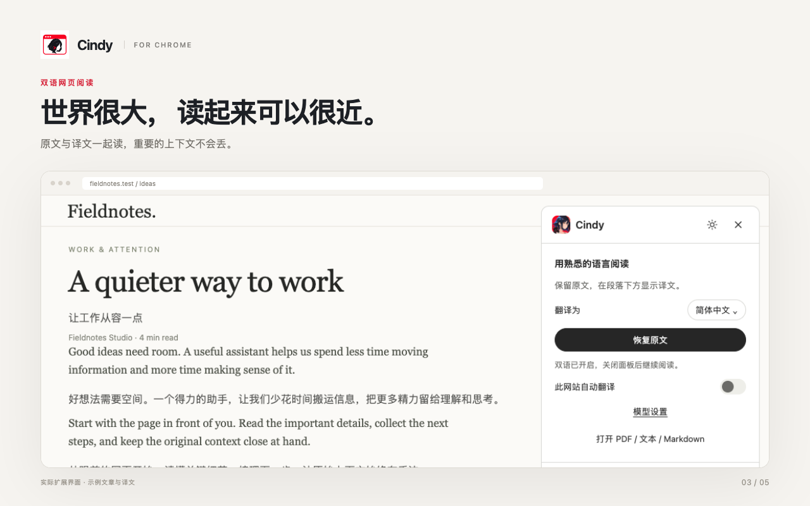
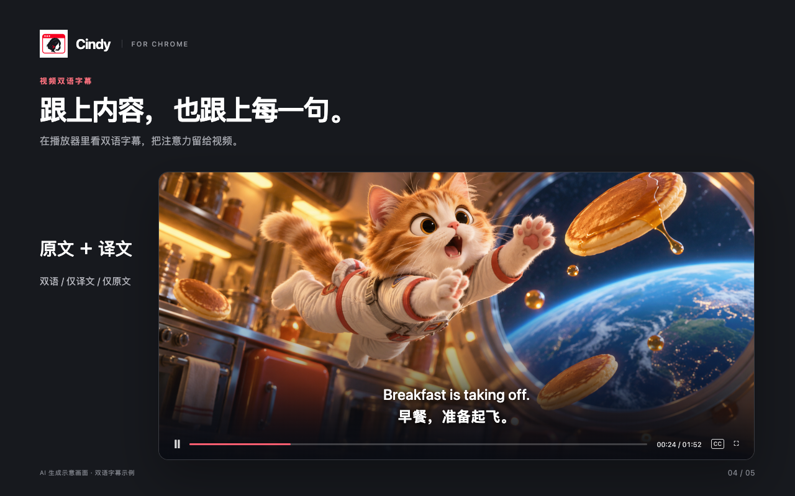
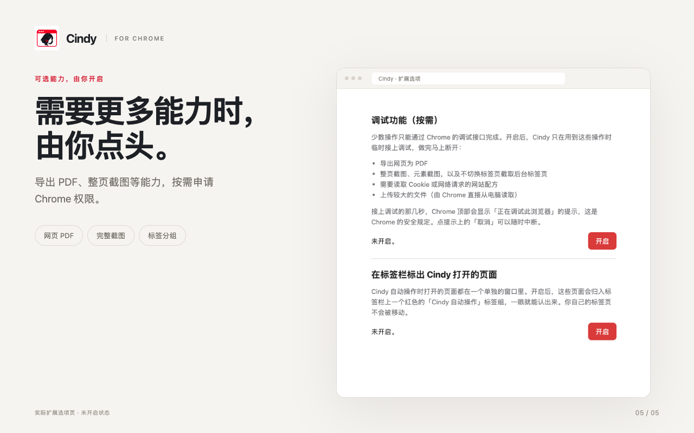
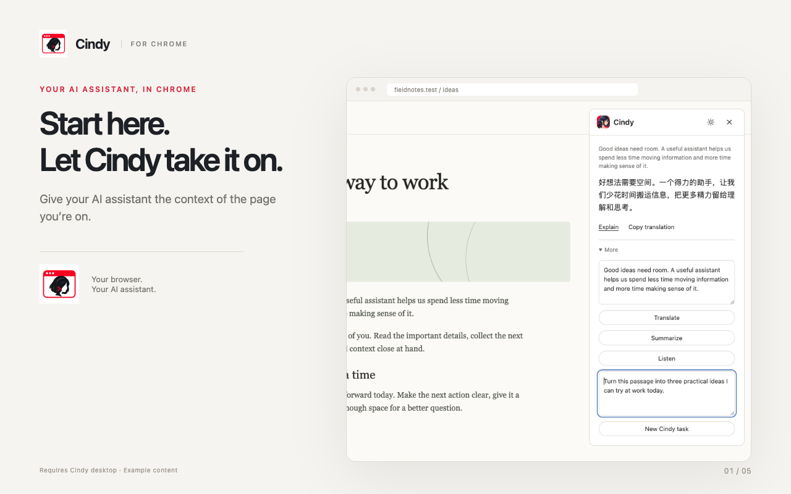
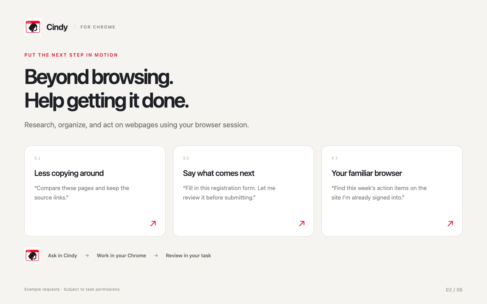
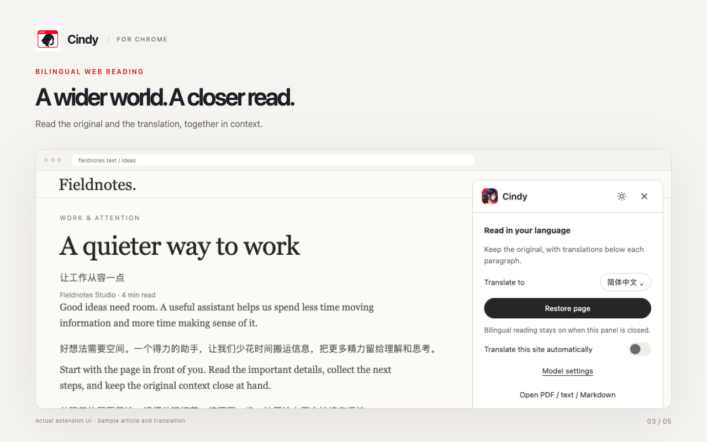
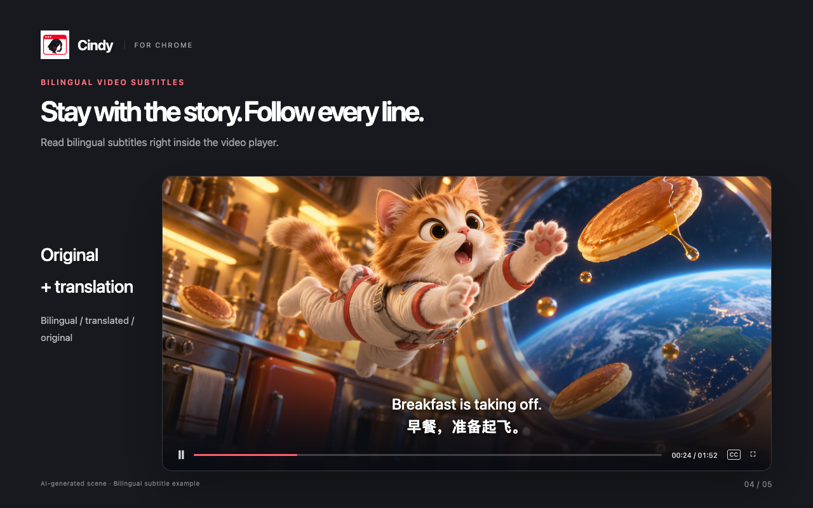
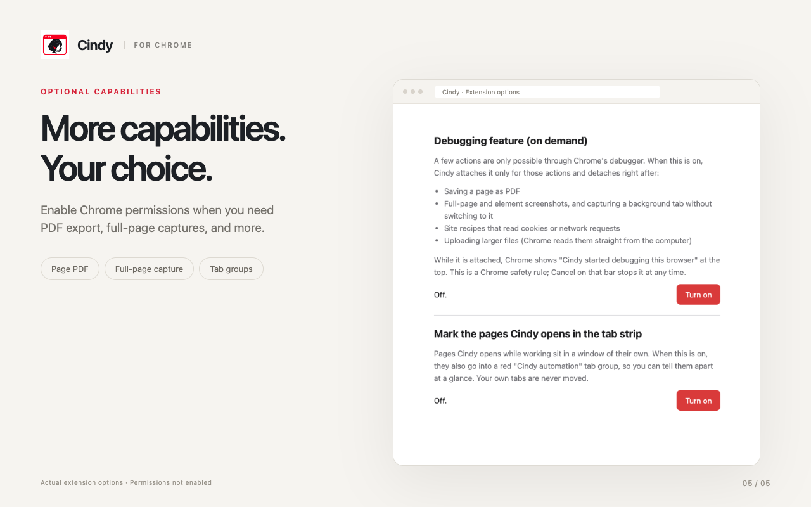

Cindy for Chrome
你的浏览器。
你的 AI 助手。
商店装修首版 · 沿用现有插件图标
中英文各 5
张截图、宣传图与商店介绍。已上传英文版 5
张截图、图标、宣传图及中英文介绍；2026-10-30 已重新提交
0.4.60，提交时为待审核、通过后自动发布。中文截图保留为备用。

下载 PNG · 1280 × 800

下载 PNG · 1280 × 800

下载 PNG · 1280 × 800

下载 PNG · 1280 × 800

下载 PNG · 1280 × 800
商店介绍 · 简体中文
短介绍建议稿
连接 Cindy 与你的 Chrome：使用已有登录状态查资料、处理网页任务，支持双语阅读、视频字幕与 PDF 阅读。
详细介绍
把 Cindy 带进你每天使用的 Chrome。带上当前网页的上下文，让 AI 助手接着查资料、整理信息、处理网页上的任务。 你的浏览器，你的 AI 助手 • 沿用已有的网站登录状态，让 Cindy 读取网页并按任务要求操作。 • 对比多页资料、整理要点和来源，减少来回复制粘贴。 • 选中一段文字，翻译、解释，或带着它新建 Cindy 任务。 • Cindy 为任务打开的页面位于单独窗口，方便与日常浏览区分。 读懂网页，也跟上视频 • 双语网页阅读：在原文旁保留译文，连同上下文一起理解。 • YouTube 播放器内字幕：选择双语、仅原文或仅译文，并设置目标语言。 • 视频翻译分段准备，显示处理进度并复用已有译文。 • 支持 PDF 阅读和字幕文件导入。 需要时，再开启更多能力 在 Chrome 扩展选项中开启可选调试权限后，Cindy 可按任务需要导出网页 PDF、截取完整页面或后台标签页、上传文件，以及处理需要调试或网络访问的浏览器任务。可选标签分组帮助你识别 Cindy 打开的页面。 开始使用 需要当前版本的 Cindy 桌面应用，以及已配置的 AI 文本模型。阅读与翻译功能还需启用 Cindy Chrome 插件。使用时请保持 Cindy 运行；让助手操作你的 Chrome 时，在 Cindy 的浏览器选择中选用“我的浏览器”。本扩展不包含 AI 订阅。模型可用性、翻译质量和响应速度取决于所选服务商与设置；部分受 Chrome 保护的页面无法访问。 数据如何处理 当你请求翻译或浏览器协助时，相关网页文字、字幕、文档、图片、表单内容、网址与任务结果可能发送到本机 Cindy，并由你配置的 AI 服务商处理。随任务内容不同，这些数据可能包括个人通信、健康或财务信息、位置信息及身份验证数据。开启可选调试权限后，浏览器任务还可访问网站 Cookie 和网络信息。Cindy 可在网页环境中执行与任务有关的 JavaScript。访问敏感页面前，请检查 Cindy 中的任务与权限设置。下载详细介绍 TXT · 下载短介绍 TXT

下载 PNG · 1280 × 800

下载 PNG · 1280 × 800

下载 PNG · 1280 × 800

下载 PNG · 1280 × 800

下载 PNG · 1280 × 800
商店介绍 · English
短介绍建议稿
Connect Cindy to your Chrome for browser tasks, bilingual webpages, video subtitles, and PDF reading.
详细介绍
Bring Cindy into the Chrome you use every day. Give your AI assistant the context of the current page to research, organize information, and help with tasks on the web. Your browser. Your AI assistant. • Use your existing website sign-ins to let Cindy read pages and act on your requests. • Compare information across pages and collect key points with source links, with less copying around. • Select text to translate or explain it, or bring it into a new Cindy task. • Pages opened by Cindy for a task appear in a separate window, apart from your everyday browsing. Read the web. Follow the video. • Read webpages with inline bilingual translation, keeping the original in context. • Watch YouTube with subtitles inside the player. Choose bilingual, original-only, or translation-only display and select your target language. • Prepare video translations in sections, with progress information and reusable translations. • Read PDF documents and import subtitle files. Enable more when you need it With Chrome's optional debugging permission enabled in extension Options, Cindy can export webpages as PDF, capture full-page or background-tab screenshots, upload files, and run browser tasks that need debugging or network access. Optional tab grouping helps identify Cindy's pages. Getting started Requires a current Cindy desktop application and a configured AI text model. Enable the Cindy Chrome plugin for reading and translation, and keep Cindy running while using these features. To let Cindy work in your Chrome, select My browser in Cindy's browser settings. This extension does not include an AI subscription. Model availability, translation quality, and response time depend on your selected provider and settings. Some browser-protected pages cannot be accessed. How data is processed When you request translation or browser assistance, relevant page text, subtitles, documents, images, form values, URLs, and task results may be sent to Cindy on your computer and processed by your configured AI provider. Depending on your task, this may include personal communications, health or financial information, location information, and authentication data. With optional debugging permission, browser tasks can also access site cookies and network information. Cindy can execute task-specific JavaScript in a webpage's context. Review the task and permission settings in Cindy before granting access to sensitive pages.下载详细介绍 TXT · 下载短介绍 TXT
图标与宣传图


界面图使用 0.4.60 原扩展 UI 与示例内容；任务指令为示例，视频画面为 AI 生成的原创场景与双语字幕示意。素材来源与上传说明